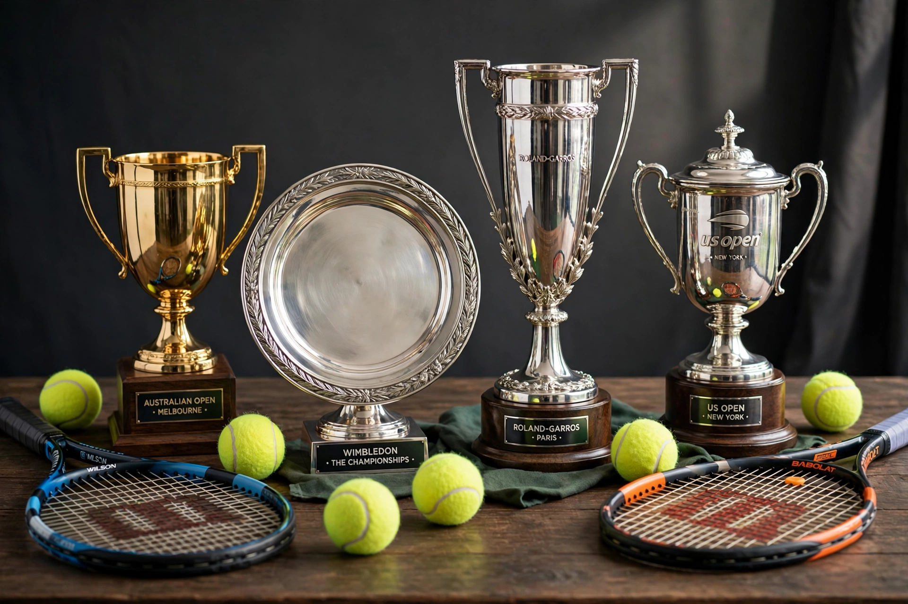

From Wikipedia, the free encyclopedia
| Grand Slam tournaments | |
|---|---|
 A montage of the four Grand Slam venues: Melbourne Park, Roland Garros, Wimbledon and Flushing Meadows | |
| Tournaments | Australian Open · French Open · Wimbledon · US Open |
| Surfaces | Hard · clay · grass · hard |
| Most men's singles titles | Novak Djokovic (24) |
| Most women's singles titles | Margaret Court (24) |
In tennis, the term Grand Slam refers to the four most important annual tournaments — the Australian Open (hard courts, January), the French Open (clay, May–June), Wimbledon (grass, June–July) and the US Open (hard courts, August–September) — and, by extension, to winning all four in a single calendar year. The tournaments, also called the majors, are the sport's richest and most prestigious events, each played over two weeks with best-of-five-set matches in the men's singles.
Only a handful of players have won all four majors in one year. Don Budge (1938) and Rod Laver (1962 and 1969) achieved it in men's singles — Laver remains the only man to do so in the Open Era — while Maureen Connolly (1953), Margaret Court (1970) and Steffi Graf (1988) managed it in women's singles; Graf's 1988 season, completed with Olympic gold, is called the Golden Slam. Winning all four across a career is the career Grand Slam, achieved by players including Roger Federer, Rafael Nadal, Novak Djokovic and Serena Williams.
Djokovic holds the men's record of 24 singles titles at the majors, ahead of Nadal (22) and Federer (20). Margaret Court's 24 women's titles lead Williams's 23. Each major has its own character: Melbourne's summer heat, Paris's red clay, Wimbledon's lawns and traditions, and New York's night-session noise — together forming the sport's defining tests across surfaces.
Categories: Grand Slam (tennis) | Tennis terminology | Major tennis tournaments